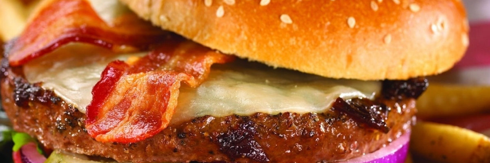

Indian Curry Around the World
Hailing originally from a relatively small part of the world, Indian curries have grown into one of the most sought-for family of foods around the globe. To sustain this massive business, the sale of curry can be split up into three stages:
- Producers, Retailers - these are the people who set the standard of the product
- Advertisers, Culinary experts - they build the market for the sale of the product
- Consumers - the consumers feed back onto the product through their purchasing/buying habits
Americanisation - Fast Food
Another aspect of global food culture change is the Americanisation of many countries around the world, more specifically what can be known as the fast food revolution. Americanisation can be defined as the export of American goods and brands, in this case McDonald's and KFC.
These fast food restaurants have become very popular in many countries around the world. McDonald's now has over 31,000 restaurants in 118 countries. Due to this popularisation of fast food restaurants, people around the world are eating more processed and sugary foods.
An Example - Chicken Tikka Masala in the UK
Chicken tikka masala is a curry that has been inspired by Indian cooking, but is actually an English-Indian hybridised food dish, made to suit English tastes. This dish undoubtedly has Indian roots, and is bascially chunks of chicken tikka in a spicy sauce. However, it is at the same time almost certainly invented in Britain.
There is no standard recipe for chicken tikka masala - proof that this dish has been made from food/recipe emigration and modified many times. According to the Real Curry Restaurant Guide, a survey of 48 different chicken tikka masala recipes found that the only common ingredient was chicken. To be blunt, its origin is highly disputed.